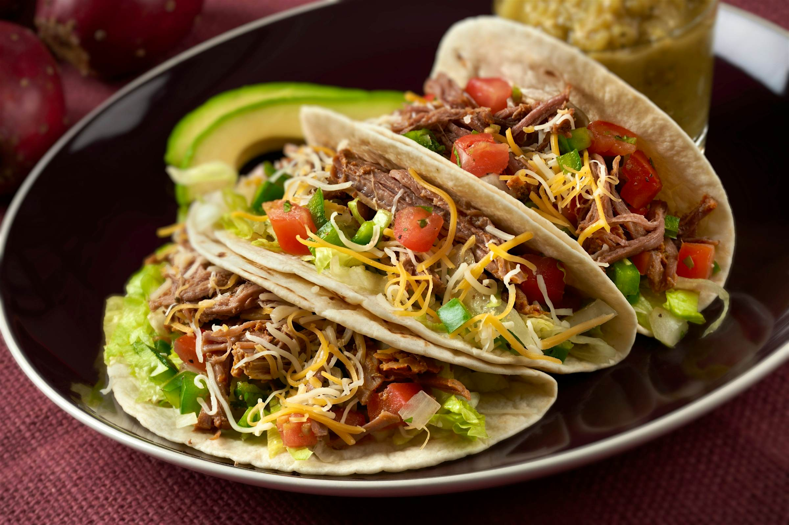

Tacos

Hard Shell Tacos
This recipe will show you how to make the perfect tacos.
Ingredients:
- Taco Shells
- Mince
- Mince Taco Spice
- Corn
- Lettuce
- Cucumber
- Tomato
- Cheddar Cheese
- Taco Salsa Sauce
- Sour Cream
Steps:
- Put the oven on 50°C or 122°F. (Hot Air Oven)
- When oven has reached temperature put your hard taco shells in for about 15 Minutes.
- Get your pan and start making the mince, when finished add in the mince spice along side with some water.
When making mince in the pan make sure you are not hard frying it and instead slowly get it ready.
- Cut up all all the veggies and add them into seperate bowls.
- If done take your taco shells out of the oven and start with adding your mince as base.
- After adding mince add the veggies you like.
- On top of the veggies add the Cheddar Cheese
- Last but not least get your salsa and sour cream and put it on top
Home